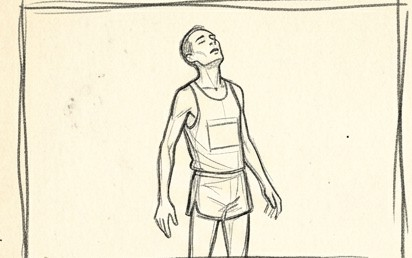
SCENE 1
ACTION: Runner standing alone on empty paper, finished, head back, hands open.
DIALOGUE: (No Dialogue) PANEL 1
The Brain Brake · boards · private
Version four · nine scenes · fifty four panels · boarded 11.8.2026
The film as it stands. Two minutes, nine scenes, no words spoken anywhere in it. Everything is graphite on warm cream paper and the only photograph in the whole film is the boy. Read it against MANAN'S FILM, which is where it started.
SCENE 1 OF 9
0:00 – 0:14
A man alone on blank paper, finished. No crowd, no road, no explanation. The film spends its opening seconds buying your sympathy and asking for nothing back, and then he goes again. The question is never spoken. It is left in your mouth.

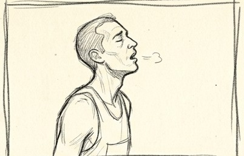
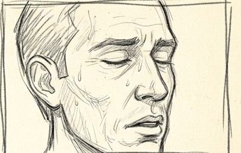
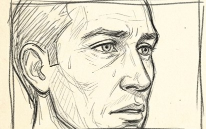
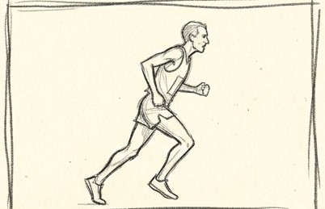
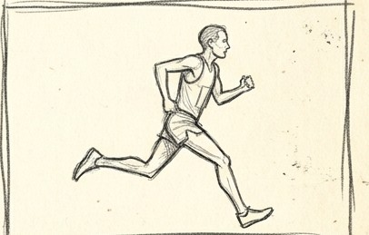
Nine scenes, no words anywhere, graphite on warm cream paper. One photographic boy in a drawn world. Scene one is the hook and it is made of one element only: earth. A body, its weight, its exhaustion. Nothing is explained and nobody speaks. The audience is given a man before it is given a question, because a question asked about a stranger is a puzzle and a question asked about somebody you have watched breathe is a story.
SCENE 2 OF 9
0:14 – 0:26
The eight most important seconds in the film. Time runs backwards at a fifth speed while the camera orbits his head, and the sweat rises off the air and goes back into the skin. No wide shot anywhere in the scene. The reversal is carried by the droplets, never by the body.
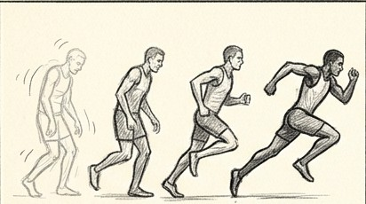
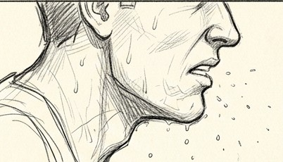
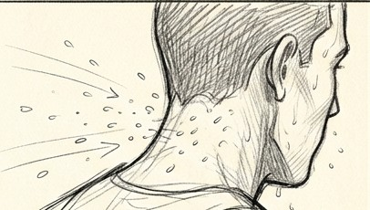
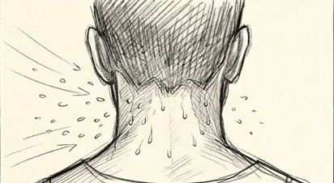
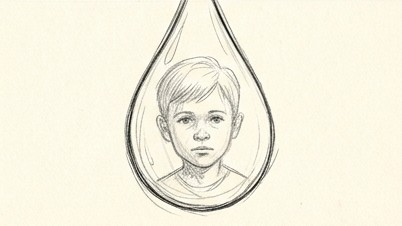
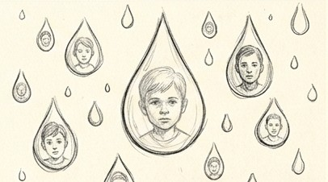
Do not animate the body backwards. That is a silent film trick and it was tried and discarded. The obvious version of a reversal is a man walking in rewind, which reads as comedy. What works is that the world runs back while the man does not. The camera never stops circling. The sweat is the clock. Water arrives here for the first time and it arrives as memory, which is why the boy is inside it before he has entered the film.
SCENE 3 OF 9
0:26 – 0:33
The boy enters, and with him the only photograph in a drawn world. He looks at the leg the way a detective looks at a room, and the film goes in through his lens. What is inside the circle is not a bigger leg. It is a man in 1923 who has not solved it yet.
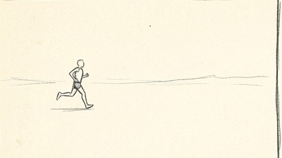
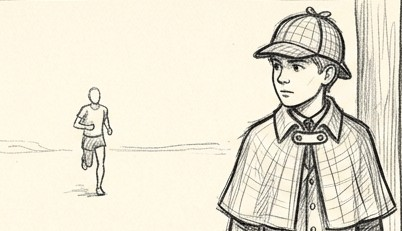
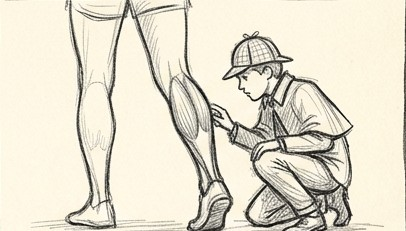
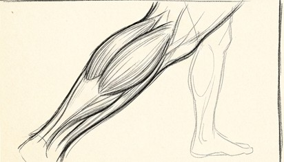
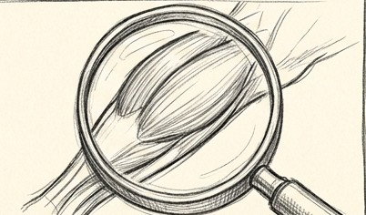
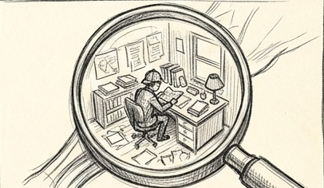
The calf is not in the frame. The calf is the frame. Eleven runs were spent on the last panel of this scene before it worked, and everything learned from it is in nanobanana.md. An instrument aimed at nothing reads as a prop demonstration. A hand holding it defeats every word about where it points. A fragment of a person only reads as presence if the frame cuts it. The circle also pays off scene two. The audience met a round lens as water with a boy inside it. Here is the same circle as his instrument with a room inside it. Nothing needs to be said.
SCENE 4 OF 9
0:33 – 0:49
The longest scene, and the one about cost. Not a theory being right, but what a discovery takes: paper everywhere, trial after trial, a man worked to the edge. Absorbed, stuck, and then the moment he sees it, which is also the order of the three heads on his model sheet.
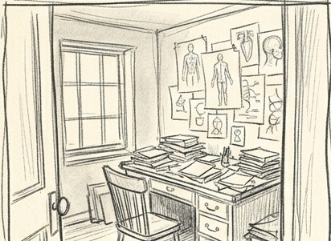
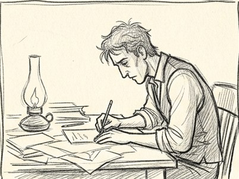
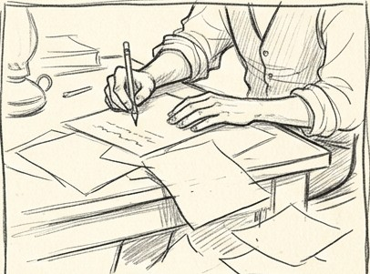
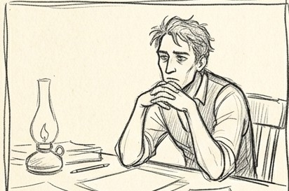
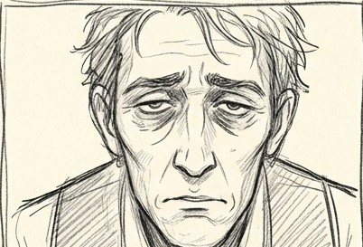
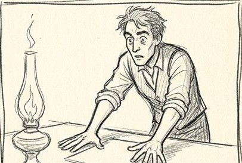
He is never named and never mocked. He is not wrong, he is incomplete, and a film that scores a point off a dead scientist loses the jury and deserves to. The room was generated whole in one frame so its corner is a real corner, and then nothing about it was rebuilt again. Every frame in this scene is literally the same drawing with the man moved. The flame leaping on the last panel is not physics. Inanimate things follow the energy of the person in the frame, and the room answering the man is the film's thesis told in furniture.
SCENE 5 OF 9
0:49 – 0:58
He has his answer, and then something goes past the window that his answer cannot hold. A runner from the present, outside a room in 1923, still accelerating after the oxygen is gone. The scene ends unresolved, and that discomfort is deliberate.
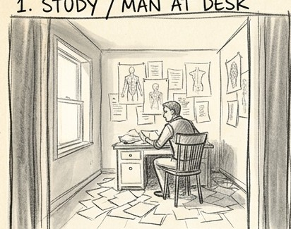
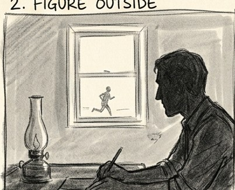
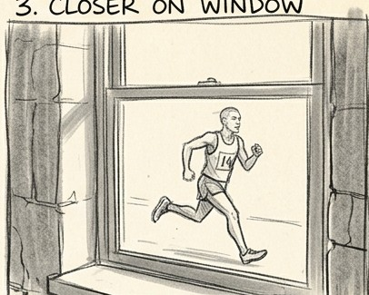
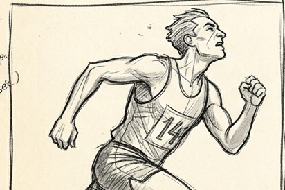
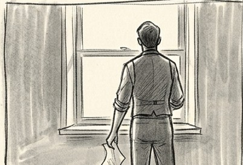
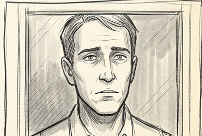
Chosen off a storyboard sheet rather than argued about in prose, which is now how story decisions get made on this film. The alternative was that the contradiction arrives on paper, a second sheet that does not fit the curve. It was cheaper and safer and it was refused, because the scene needed a body in a room made of paper. The runner is our runner, number twenty seven, the same man who collapses in scene one. A runner from the present outside a window in 1923 is not an anachronism to fix. It is the crack itself.
SCENE 6 OF 9
0:58 – 1:09
One unbroken climb from the calf to the skull, and the drawing gets lighter as it goes. The film moves its argument out of the muscle and into the head without ever saying so, and where the skull should be there is a door.
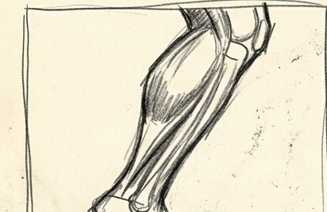
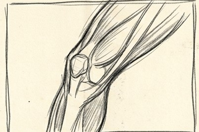
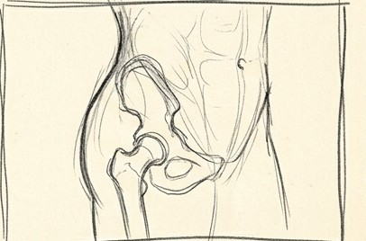
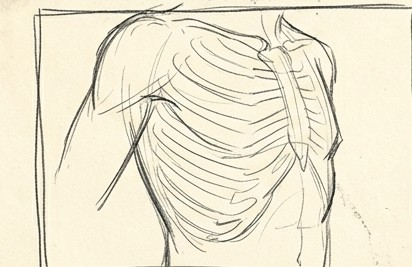
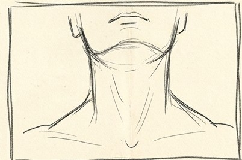
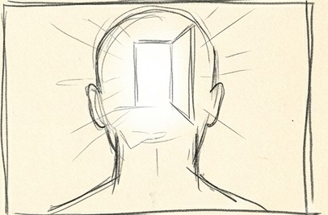
Do not cut this if it can be avoided. It is one move. The thinning of the line is the whole point: below is measurable and above is imagined, and the border is exactly here. The audience should feel that they have left anatomy without being told that they have.
SCENE 7 OF 9
1:09 – 1:30
The room in the head, and the character the film exists for. He is not a villain. He is a professional doing his job well, watching everything, and the argument of the whole film is one gesture: he takes the lever to ninety five and never to a hundred.
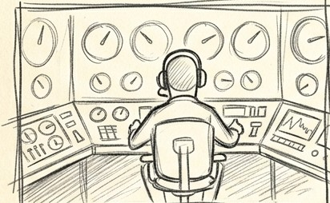
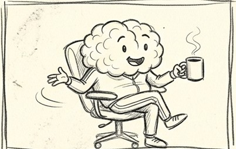
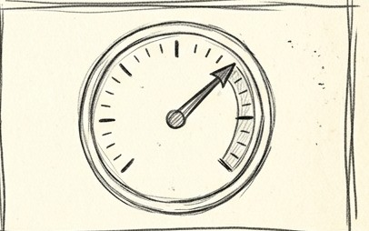
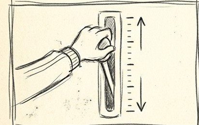
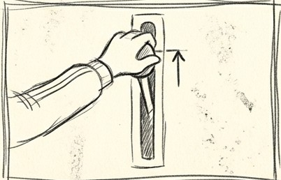
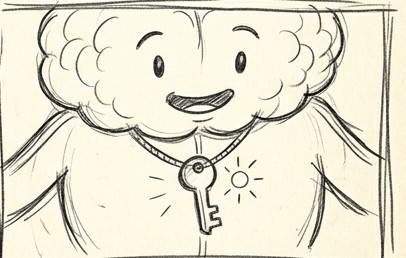
If he looks malicious the frame is wrong. He is likeable and competent and entirely on the runner's side, and the reserve he keeps back is care rather than cruelty. Nobody says the number out loud. The lever stopping short is the sentence. The key is the first true gold in the film. Every brass before this has been held close to graphite in the grade so that this moment has somewhere to go.
SCENE 8 OF 9
1:30 – 1:51
Water arrives as mercy rather than refreshment, the boy is in the drops again, and the lever goes up. Nothing is given to the runner from outside. The reserve was always inside him, and the sprint from the first scene is finally understood rather than explained.
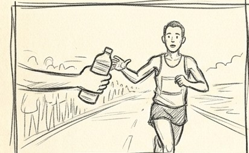
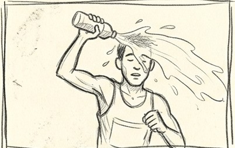
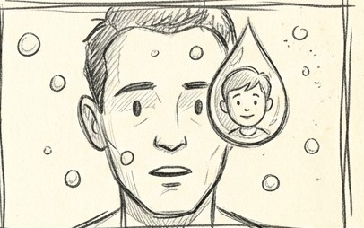
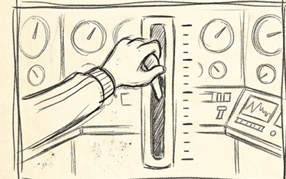
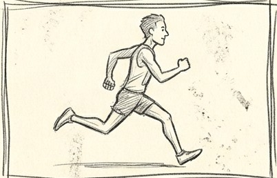
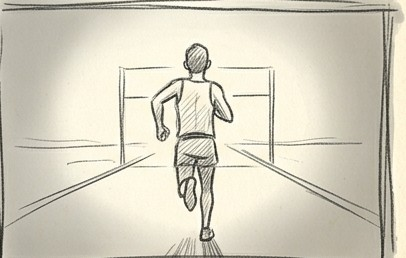
This is the payoff of scene two and it must feel like an echo, not a repeat. Same drops, same faces, opposite direction: there the water went back into him, here it comes down over him. The grade does its only real work in this scene, cream moving to gold. It is the single place in two minutes where colour carries the meaning.
SCENE 9 OF 9
1:51 – 2:00
The film empties out. The figure thins until it is a line, then nothing, and the boy is left standing alone looking at us. No conclusion, no lesson, no summary. The audience is trusted to have understood, and to notice that the film has been about them.
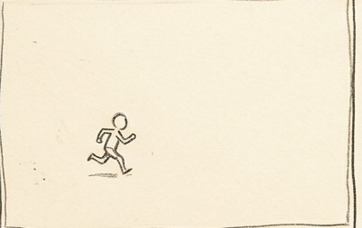
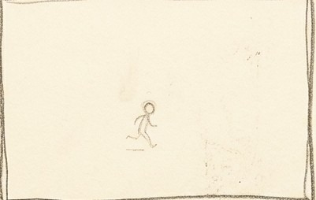
The temptation here is to explain, and it must be refused. Nine seconds of almost nothing after a hundred and eleven seconds of density is what makes the film land. Ether is the only element in this scene. Space, silence, the thing that holds the other four. If the audience leaves quiet rather than impressed, it has worked.
THE BRAIN BRAKE · Mantra Productions · boards, private